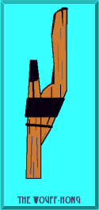
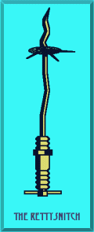
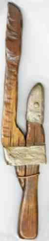

In 1930, the Handbook had pictures of both instruments of enforcement. By 1936, only the Wouff-Hong appeared, and by 1947, the Handbook had deleted both photos. Just when we needed traditions of law and order and of decency in amateur operations to guide its growth in the post World-War-II explosion of technology and easier licensing, the symbols had disappeared from view.
 Many of today's hams have no idea what a Wouff-Hong and a Rettysnitch look like. To rectify that gap in hamdom's essential history, I have used my very limited CAD abilities to make sketches of the two instruments. Figure 1 is the Wouff-Hong. The two main pieces appear to be wood banded by metal strapping and by heavy wire. What the sketch cannot convey is the darkness at the upper end of the longer wood piece, as if stained by blood or purified for its grave duties in the fires of purgatory--or both.
 Figure 2 is a sketch of the Rettysnitch, an all-metal tool. Of the 5 teeth around the disk near the pointed end, only three remain. According to tradition, the other two have done their work and perished in the effort. Again, my limited skills in rendering the Rettysnitch rob the device of its terrible demeanor, and therefore of its force to ensure operating decency among amateurs.
Perhaps the last time the story of the Wouff-Hong and the Rettysnitch was told was in 1934. Thanks to Ed Guilford, AA7HQ, in Bothell, Washington, I have the May, '34, QST in which Rufus P. Turner--famous in the annals of electronics writings--recounted "Hamdom's Traditions: A Bedtime Story for Young Squirts." But even by Turner's time, the Rettysnitch was relegated to a paragraph on the story's continuation page in the back of the magazine, with no picture. Somehow, even then, folks had forgotten that you can never have law and order without first having decency. Some pessimists think that we now have neither.
I do not subscribe to the pessimist's view. Sure, the number of rotten operators has skyrocketed, but not their proportion to the main corps of good, legal, and decent operators, capable and courteous to a fault. We should not be troubled by the size of the job of curing amateur radio of its illegalities and indecencies, for we have more folks to help use the Wouff-Hong and the Rettysnitch just where and how they ought to be used. No, not on others, but on ourselves--to make sure that we set a model for how amateur operations ought to be conducted.
Turner offers no prescription for using either device, but thought the Wouff-Hong able to beat out King Kong's brains or easily plow up acres of Manhattan bedrock. That will tell you something of the power of these machines. But it won't tell you how they came to be.
Remember T.O.M.--The Old Man--who wrote in earliest days of "Rotten QRM." His very first article in 1917 blasted concocted abbreviations just coming into use. Among the almost unintelligible gibberish in his headphones were words like "wouff hong" and "rettysnitch," surely instruments of terrifying punishment. By mid-1917, ARRL was besieged by orders for these contraptions, orders that could not be filled because the League staff had never seen either device.
In 1919, after World War I (then called simply the Great War since no one could imagine doing all that destruction and killing all over again), the League once more took up its work in earnest. At just this critical time, the Directors received from The Old Man a package containing an authoritative and well-preserved specimen of Wouff-Hong. Turner described the contents of the package as "the gruesome instrument of torture." By order of the Directors, it was hung in the office of the Secretary-Editor, within easy reach. Its first portrait appeared in QST for July that year. At each Board meeting, the Wouff-Hong stood on display, to the blanched looks of the humbled Directors.
The Old Man also presented the world with its first glimpse of the Rettysnitch. In 1921, the monstrous machine was presented to the League traffic manager by the Washington, D.C., Radio Club, ostensibly after receiving it from T.O.M. Even at its first public appearance, two of its teeth were missing, suggesting a long history of necessary and effective use. However, to this day, the Rettysnitch has lost no other teeth. It was ordered to hang by its mate.
 In the 20s and 30s, many a reproduction of both instruments, but especially the Wouff-Hong, materialized across the country. (The photograph of one such replica of a Wouff-Hong is courtesy of Joe Holstein, N8EA.) A group of hams in Flint, Michigan, created the mystic society called the Royal Order of the Wouff-Hong. The society endures to this day, according to legends to which I have so far not been privy. And The Old Man has been given a name: Hiram Percy Maxim, W1AW. At least, legend tells the story that way, perhaps based on the fact that T.O.M. glared at "Kitty" while reflecting on the "rottenness" of everything. Maxim did have a cat. However, true to feline nature, Maxim's cat never spilled the beans.
But what has become of the Wouff-Hong and the Rettysnitch? More important, what has become of their power to enforce both decency and law and order on the ham bands? Hams used to cringe at the thought, let alone the sight, of these dreadful tools of enforcement. But, we do not hear of them much anymore. Oh, a tremor of curiosity every now and again brings out a ripple of questions and speculation. But not much more than a ripple.
You see, today, we have much more terrifying weapons, things like Oozies and H-booms and the like. They scare us in ways that seem to make the Wouff- Hong and the Rettysnitch tame and toothless. However, even in Maxim's day, objectively more powerful weapons were used in France, like tanques and gas more poisonous than that made by Texas chili. Why were the Wouff-Hong and the Rettysnitch so powerful to those early hams?
Because those hams cared about amateur radio in their hearts. They wanted what they knew they could never have: a perfectly law-abiding and decent radio service that would inspire young and old alike to become hams or, lacking the inclination to electronics, to become admirers of hams. Every minute of on-the-air time was a chance to show how noble a pursuit amateur radio was and should always be. They feared the Wouff-Hong and the Rettysnitch as instruments of their own consciences, as they strove to meet the standards they set for themselves.
And that is where today you will find both the Wouff-Hong and the Rettysnitch--deep in your own conscience. If they seem to hold no power, then you know it is time once more to elevate your standards a notch higher, and then to strive to achieve them perfectly. Each of us has a secret and private office where no one else may go. Above the door, facing our individual operating tables, hang two instruments, one of law and order, the other of decency. However much the outside world may neglect the tradition of these terrible reminders of responsibility, each of us posses our own Wouff-Hong and Rettysnitch. May you never deserve their sting.
Like all legends, this one, too, must end with special words: pass it on.
Updated 2-16-99. Versions of this item have appeared in 72, the newsletter of the New England QRP Club and in QST, the journal of the American Radio Relay League. Photographs of both the Wouff-Hong and the Rettysnitch may be seen at the Sparks Telegraph Key Review pages, along with a vast array of telegraphy keys.